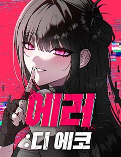
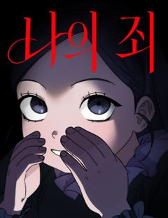

스릴러·공포 오컬트·공포·괴담 웹툰 추천 TOP 30
스릴러·공포 작품 중에서 오컬트, 오컬트판타지, 공포, 괴담 같은 요소가 들어간 작품만 골랐어요. 네이버웹툰·카카오웹툰·레진코믹스에서 조건에 맞는 작품 30개 중 인기 순으로 30개를 골랐어요. 인기 TOP 3: 귀촌리, 미래의 골동품 가게, 원주민 공포만화
2026-10-08 기준 · 성인 작품 제외
내 취향으로 더 좁혀서 추천받기 →-
1
 네이버웹툰
네이버웹툰귀촌리
평범한 시골 마을 '귀촌리'를 찾은 '허무명'. 그는 돌아가신 할머니의 빈 집에 조용히 숨어든다. 그런데 집이 이상하리만큼 깔끔하다. 할머니가 돌아가신 건 3년 전인데? 어쩐지 마을 사람들은 이방인 무명의 방문을 달가워 하는 것 같지 않다. 아니, 실은 경계하는 것 같다. 그리고 그…
스릴러·공포오컬트괴담고자극스릴러자극적인네이버웹툰에서 보기 → -
2
 네이버웹툰
네이버웹툰미래의 골동품 가게
남해의 먼 섬에 살고 있는 소녀, '미래'. 미래의 부모님이 바다에서 돌아오지 못한 그날부터, 모든 것들이 변하기 시작했다. 저주를 풀기 위한 단 한 가지의 방법. 소중한 것들을 지키기 위한 기묘한 소녀의 퇴마가 시작된다.
스릴러·공포오컬트오컬트판타지괴담시리어스네이버웹툰에서 보기 → -
3
 네이버웹툰
네이버웹툰원주민 공포만화
끝날 때까지 끝난 것이 아니다! 마지막까지 방심할 수 없는 다양한 에피소드. 당신의 상상을 뛰어넘는 본격 반전 공포 스릴러가 온다!
스릴러·공포오컬트오컬트판타지괴담병맛네이버웹툰에서 보기 → -
4
 네이버웹툰
네이버웹툰클래스메이트
"내가 친구가 되어줄게." 왕따 소녀 주은하에게 찾아온, 섬뜩한 귀신 소년 이해수. 위험한 우정을 받아들인 순간 은하 주위에 예기치 못한 사건들이 벌어지는데... 정체불명의 친구가 내민 이 손은 과연 구원일까, 아니면 저주일까?
스릴러·공포오컬트공포로맨스릴러미스터리네이버웹툰에서 보기 → -
5
 네이버웹툰
네이버웹툰맹종
만신인 할머니가 봉인해둔 뱀신, 진을 해방시킨 어린 화림은 진에게 몸을 빼앗기고, 화림을 살리기 위해 할머니는 자신의 목숨을 내놓는다. 세월이 흘러 고등학생이 된 화림은 아직까지도 자신을 끊임없이 찾고 있는 진을 피해 살고 있다. 그러던 어느 날, 같은 학교에 다니던 봉길이 진에게 몸…
스릴러·공포오컬트오컬트판타지공포혐관네이버웹툰에서 보기 → -
6
 네이버웹툰
네이버웹툰제물 투표
한 번 들어가면 다시는 나올 수 없는 정체불명의 마을에 갇혀버렸다. 그곳에선 사람들이 이틀에 한 번씩 악마에게 바칠 사람을 뽑는 ‘제물 투표’를 한다. 악마들은 기차를 타고 와서 제물을 아그작아그작 씹어 먹는다. 비밀 가득한 이곳에서 탈출할 방도가 도저히 없어 보인다. 오늘 밤, 뽑히…
스릴러·공포공포비쥬얼쇼크흑백스릴러네이버웹툰에서 보기 → -
7
 네이버웹툰
네이버웹툰흉가에 들어가면 안되는 이유
밝은 세상은 어떤 모습일까? '이현'의 세상은 흉측한 귀신과 영혼이 남기고 간 검은 덩어리로 가득하다. 평범한 삶을 살기위해 애써 그것들을 모른척하던 현의 앞에 흉가만 찾아다니는 이상한놈이 나타나는데... 위험천만한 그곳에서 우리는 무사히 빠져나갈수 있을까?
스릴러·공포오컬트공포학원물다크판타지네이버웹툰에서 보기 → -
8
 네이버웹툰
네이버웹툰대마법사 커리큘럼
착하고 의롭지만 조금? 무섭게 생긴 마법사 유진, 스승의 딸인 아인을 제자로 거둬 대마법사로 키우고자 한다. 마법으로 구원받고 마법으로 혼란스러워진 세상에서, 유진쌤과 함께 위대한 대마법사를 목표로 나아가자!
스릴러·공포공포액션판타지마법우정네이버웹툰에서 보기 → -
9
 네이버웹툰
네이버웹툰수상한 다이어트 클럽
모태 통통 ‘고양순’은 부모님의 등쌀에 못이겨 박박사 다이어트 클럽에 입소한다. 어딘가 수상해 보이는 박박사지만, 그녀의 이력 만큼은 누구보다 확실하다. 성공률 100%를 자랑하는 이곳의 퇴소 조건은 단 하나, ‘목표 체중을 다 감량해야만 하는 것!' 과연 100kg가 넘는 양순 역시…
스릴러·공포괴담바디 호러고자극스릴러인생역전네이버웹툰에서 보기 → -
10
 네이버웹툰
네이버웹툰두근두근 귀연시
반지하 월세방에서 게임 스트리머로서 생활을 이어가던 최도연. 자신에게 많은 도움을 준 고향 선배이자 방송 선배인 삭제형에게 한 게임 링크를 받게 되는데. 별생각 없이 [두근두근 귀연시] 를 다운로드한 도연의 앞에 보여선 안될 그녀들이 보이기 시작한다. 당황도 잠시 목숨을 건 처녀귀신…
스릴러·공포오컬트판타지로맨스릴러하렘게임네이버웹툰에서 보기 → -
11
 네이버웹툰
네이버웹툰귀령
배꽃향기 가득한 지리산 자락의 작은 암자 세암당. 남도 만신의 후예이자 천궁 선녀의 환생 하연은 금강저를 통해 영의 세계에 개입할 수 있는 청년, 건우를 만나 세상의 슬픔과 한을 풀고 악귀를 퇴치해 나간다.
스릴러·공포오컬트공포동양풍판타지소설원작네이버웹툰에서 보기 → -
12
 네이버웹툰
네이버웹툰괴이현상 하나
괴이현상 규칙 하나, ?̵̡͖̺̮͚̱͚̿͛̋͌̑͡?̢̨̲̤̞͙̟̌̏́̒̔̎̅͌͠͝?̴̰̭̭͉̬͙̲̄̀̐̿͐͋͛͡͠?̧͖͈̮̞̯̯̟̲̒̏̒͘͘͠을 잊지 마세요. 괴이현상 규칙 둘, 중심부 ?̭̠͙̖̹̪͎͗̒̒̋͒͠?̸̫͈̯͉̝̰͇́̒̀̏́͂͛͟͠을 찾으세요. 괴이현상 규칙 셋, ?͗̒̒…
스릴러·공포공포괴담비쥬얼쇼크바디 호러네이버웹툰에서 보기 → -
13
 네이버웹툰
네이버웹툰사랑이 끝나면 네가 끝난다
귀신을 볼 수 있는 소녀. 그녀 앞에 나타난 과거의 인연을 쫓아온 귀신 ‘백적’은 사랑을 말하지만, 그 시선은 다른 누군가를 향한다. 사랑을 위한 사냥감이 되고, 나는 점점 ‘나’를 잃어간다. 애정과 집착 사이, 자아의 경계가 뒤틀리는 로맨스 스릴러.
스릴러·공포오컬트판타지공포로맨스릴러2025 지상최대공모전네이버웹툰에서 보기 → -
14
 네이버웹툰
네이버웹툰숨쉬지마
불의의 사고로 꿈을 잃은 남자 주인공 수영은 여동생 희수와 함께 크루즈 여행을 떠난다. 하지만 그곳엔 알 수 없는 바이러스가 퍼지게 되고, 사람의 머리를 가져가는 괴물이 사람들을 공격한다. 그 과정에서 주인공은 여동생과 떨어지게 되는데, 도망칠 곳은 망망대해 바다밖에 없다. 수영은 과…
스릴러·공포공포절망적인생존스릴러네이버웹툰에서 보기 → -
15
 네이버웹툰
네이버웹툰인간의 식탁
망망대해에 홀로 떠 있는 해상원자력발전소 ‘레비아탄 호’. 안전점검을 위해 이곳을 방문한 윤호와 회사 동료들은 의문의 폭발사고와 함께 외부와의 통신이 끊긴 채 고립된다. 그러나 폭발은 시작에 불과했다. 원자로의 연기 속에서 정체불명의 거인이 나타나 생존자들을 습격해 잡아먹기 시작하고…
스릴러·공포공포생존데스게임크리처네이버웹툰에서 보기 → -
16
 네이버웹툰
네이버웹툰기생번식
스릴러 대가 <꼬리잡기> 바쉬 작가 신작. 근원을 알 수 없는 기이한 현상을 겪게 된 세 사람. 덕분에 세 사람은 원하던 모든 것을 얻게 되지만… 처음엔 즐거움만 선사하던 그것이 점점 그들의 일상, 그들의 생사까지 지배하려 한다는 사실을 깨닫는다. '그것'의 목적은 무엇일까. 행운의…
스릴러·공포오컬트판타지공포괴담바디 호러네이버웹툰에서 보기 → -
17
 네이버웹툰
네이버웹툰0의 온도
고1때부터 자신을 따라다니던 영혼 '0'과 사랑에 빠진 민경희. 그녀는 성인이 되자마자 '0'과 영혼결혼식을 올리고, '0'이 머물 수 있는 '몸'을 만들어 주기로 약속한다. 그러나 만질 수 없는 것을 탐하게 된 대가가 따르는데...
스릴러·공포오컬트오컬트판타지로맨스릴러2025 연재직행열차네이버웹툰에서 보기 → -
18
 네이버웹툰
네이버웹툰소곤소곤2
옛사람 작가의 옴니버스 미스터리 드라마 <소곤소곤>이 돌아왔다! 세상 어딘가에 있을 기묘한 이야기.
스릴러·공포오컬트괴담감성적인시리어스네이버웹툰에서 보기 → -
19
 네이버웹툰
네이버웹툰로스트 미디어샵 아코드
'잊혀진 매체'라는 뜻을 가진 '로스트 미디어'. 아코드는 그런 로스트 미디어를 사람들에게 선보이는 가게이다. 아코드의 아리따운 점원 '리카'는 손님들이 찾는 로스트 미디어를 다시금 그들 앞에 선보인다. 하지만 잊혀진 것에는 잊혀진 이유가 있다고 했던가. 우리가 기억 속에서 그 매체들…
스릴러·공포오컬트공포괴담크리처네이버웹툰에서 보기 → -
20
 네이버웹툰
네이버웹툰주희의 주위
유령을 볼 수 있는 민이. 그리고 민이와 어릴 적 둘도 없는 친구 사이였던 주희. 민이는 주희와 있을 때면 유령을 보지 않았고 덕분에 평범하게 성장했지만, 원인 모를 사고로 주희는 어린 나이에 세상을 떠났다. 분명 그런 줄 알았는데... 고등학교에서 멀쩡히 살아있는 그녀와 재회한다.…
스릴러·공포오컬트시리어스미스터리스릴러네이버웹툰에서 보기 → -
21

-
22
 네이버웹툰
네이버웹툰공포 쯔꾸르 생존기
전설의 공포게임 [비현실]을 실행한 순간 게임 속에 갇힌 이현. 한밤중의 학교에서 눈을 뜬 그는 의문의 여고생 다연과 만난다. 이곳에서 살아남는 방법은 단 하나, 섬뜩한 퍼즐을 풀고 숨겨진 규칙을 찾아낼 것. 과연 두 사람은 죽음의 게임을 끝내고 현실로 돌아갈 수 있을까?
스릴러·공포오컬트오컬트판타지공포고자극스릴러네이버웹툰에서 보기 → -
23카카오웹툰
당골의 신부
상식 밖의 일들이 숨 쉬듯 일어나는 당골 무당 집에서 태어났지만, 상식의 세계에서 엘리트의 삶을 살고자 노력해온 수험생 진후. 명문대 합격 소식을 받고 이제 인생 피나 싶었던 날, 무시무시한 재앙이 일어난다. “귀문(鬼門)이 열렸구나.” 그리고 밝혀지기 시작하는 진후의 비밀들……. 아…
스릴러·공포공포직업드라마카카오웹툰에서 보기 → -
24

네이버웹툰나의 죄
사고로 첫째 딸 나리를 구하고 뱃속의 아이를 잃은 소영. 사고 이후, 여덟 살 나리는 죽은 동생 흉내를 내기 시작한다. 트라우마로 인한 퇴행일까, 정말 죽은 아이가 딸의 몸을 빌린 걸까. 딸을 의심할수록 엄마라면 절대 품어선 안 될 자신의 끔찍한 마음과 마주한다.
스릴러·공포오컬트판타지공포가족드라마네이버웹툰에서 보기 → -
25
 카카오웹툰
카카오웹툰좀비가 날 물지 않아
이환이 깨어났을 때 세상은 변해 있었다. 산자들의 피를 갈구하는 좀비와 살기 위해 도망치는 인간들. 그런데... "좀비들이 왜 나는 물지 않지?" 엄청나게 강해진 힘과 좀비들의 눈을 닮은 붉게 물든 한쪽 눈. 그리고 피를 볼 때 마다 느껴지는 알 수 없는 허기까지. "내가 어떻게 된…
스릴러·공포공포서스펜스액션아포칼립스카카오웹툰에서 보기 → -
26네이버웹툰
기로의 밤
불운으로부터 시작된 삶이었다. 스무 살, 모든 기억을 잃은 채 병실에서 눈을 뜨고 퇴원길에는 보지 말아야 할 것을 봤을 때부터 서이연은 매사에 필사적이었다. 괜찮아지기 위해, 평범해지기 위해, 외로움에 죽지 않기 위해. 몇 년간의 노력 끝에 마침내 무수했던 삶의 균열은 먼지로 뒤덮여…
스릴러·공포오컬트로맨스릴러2024 지상최대공모전계략남네이버웹툰에서 보기 → -
27
 네이버웹툰
네이버웹툰오싹한 연애
완벽한 재벌 상속녀 천여리. 손이 닿는 사람까지 귀신을 보게 만드는 저주를 지녔다. 시신 유기 현장에서 엮인 열혈 검사 마강욱은 여리의 '실수' 한 번으로 귀신이 보게 되는데… 귀신을 막으려면 밀착, 정체를 숨기려면 위장 약혼까지? 공조는 점점 위험해지고, 심장은 점점 가까워진다. 귀…
스릴러·공포오컬트로맨스릴러재벌녀능력녀네이버웹툰에서 보기 → -
28
 네이버웹툰
네이버웹툰귀신이 곡할 노릇
결혼정보회사를 통해 만난 완벽한 남자 권실원. 모두가 그를 좋아하지만, 정작 결혼을 약속한 이인해는 권실원을 두려워한다. 그의 완벽한 집착이 말 그대로 선을 넘었기 때문이다.
스릴러·공포오컬트오컬트판타지공포바디 호러네이버웹툰에서 보기 → -
29
 네이버웹툰
네이버웹툰데빌 캐피탈
가난한 대학생 태구는 빚에서 벗어나기 위해 <데빌 캐피탈>에서 감각 일부를 바치고 악마와 계약한다. 태구는 빚을 갚고 평범한 삶으로 돌아가려 하지만 악마는 모든 걸 가져가기 위해서 태구 주변을 압박한다. 그 과정에서 옆방에 살던 자린과 살인 사건에 휘말리며 다시 악마와 계약하게 된다.…
스릴러·공포오컬트판타지공포고자극스릴러현대판타지네이버웹툰에서 보기 → -
30
 네이버웹툰
네이버웹툰악몽무당
대한민국 최고의 무당 범구는 그가 모시는 무영장군신의 죽음으로 한순간에 나락에 떨어진다. 신을 부활시킬 방법은 단 하나, “무당이여! 살인사건 트라우마로 들어가 악귀를 처단하라.” 최악의 피해자들을 구원함으로써, 무당 범구는 스스로를 구원할 수 있을까!
스릴러·공포오컬트판타지공포열혈시리어스네이버웹툰에서 보기 →